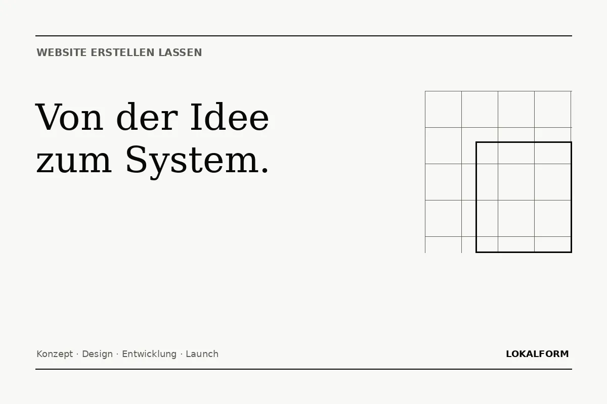

Website erstellen lassen
Konzept, Design, Entwicklung und SEO gehören zusammen. Lokalform baut Websites in einem klaren Prozess statt aus einzelnen Bausteinen ohne gemeinsame Richtung.

Website erstellen lassen – ohne Blackbox.
Eine Website sollte nicht mit Farben und Animationen beginnen, sondern mit einer Aufgabe. Welche Leistungen müssen verstanden werden? Wer soll die Seite nutzen? Was ist der wichtigste nächste Schritt? Erst wenn diese Fragen geklärt sind, werden Navigation, Inhalte und Gestaltung festgelegt.
Bei Lokalform besteht der Prozess aus klaren Phasen. Dadurch bleibt sichtbar, was gerade entsteht und warum. Das reduziert unnötige Korrekturschleifen und sorgt dafür, dass Design, SEO und Funktionen nicht nachträglich gegeneinander arbeiten.
Ziel
Zielgruppe, Leistungen, gewünschte Anfragen und notwendige Funktionen klären.
Struktur
Seiten, Navigation, Inhalte und interne Verlinkung planen.
Design + Build
Individuelle Gestaltung responsive und technisch sauber umsetzen.
Launch
Indexierung, Sitemap, Metadaten, Formulare, mobile Darstellung und Livegang prüfen.
Der Preis hängt nicht an der Zahl der schönen Effekte.
Entscheidend sind Umfang, individuelle Gestaltung, Inhalt, Funktionen und die notwendige technische Logik. Ein kompakter Webauftritt kann deshalb ab 400 € starten. Eine mehrseitige Business-Website beginnt ab 600 €. Besondere Adminbereiche, Schnittstellen oder komplexe Funktionen werden nach Umfang kalkuliert.
Nicht erst nach dem Launch an Google denken.
SEO beginnt bei der Informationsarchitektur: klare Seitenthemen, verständliche Überschriften, interne Links und Inhalte, die echte Fragen beantworten. Dazu kommen technische Grundlagen wie Canonicals, Sitemap, crawlbare Bilder, strukturierte Daten und schnelle mobile Darstellung. So muss später nicht eine schöne Website komplett für Suchmaschinen umgebaut werden.
Aus einer Idee wird eine klare Website.
20 Minuten reichen für eine erste Richtung: Ziel, Umfang, Seitenstruktur und sinnvolle Funktionen.
Termin auswählen ↗